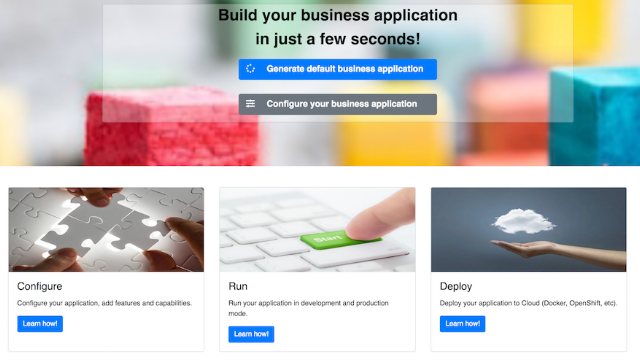
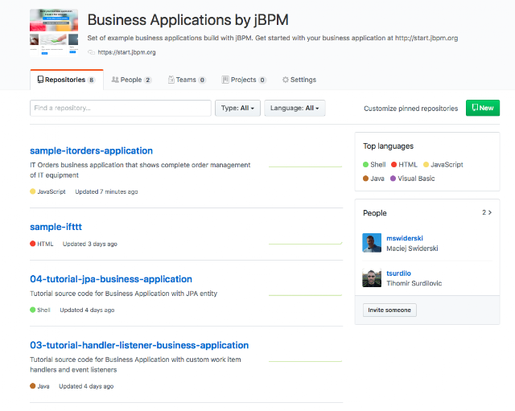

Launch of Business Applications
The time has come – Business Applications are here!!!
It’s a great pleasure to announce that the Business Applications are now officially launched and ready for you to get started.
 |
| start.jbpm.org |
Business application can be defined as an automated solution, built with selected frameworks and capabilities that implements business functions and/or business problems. Capabilities can be (among others):
- persistence
- messaging
- transactions
- business processes,
- business rules
- planning solutions
Capabilities essentially define the features that your business application will be equipped with. Available options are:
- Business automation covers features for process management, case management, decision management and optimisation. These will be by default configured in the service project of your business application. Although you can turn them off via configuration.
- Decision management covers mainly decision and rules related features (backed by Drools project)
- Business optimisation covers planning problems and solutions related features (backed by OptaPlanner project)
Business application is more of a logical grouping of individual services that represent certain business capabilities. Usually they are deployed separately and can also be versioned individually. Overall goal is that the complete business application will allow particular domain to achieve their business goals e.g. order management, accommodation management, etc.
Business application consists of various project types
- data model – basic maven/jar project to keep the data structures
- business assets – kjar project that can be easily imported into workbench for development
- service – service project that will include chosen capabilities with all bits configured
Read more about business applications here
Get started now!
To get started with your first business application, just go to start.jbpm.org and generate your business application. This will provide you with a zip file that will consists of (selected) projects ready to run.
Once you have the application up and running have a look at documentation that provides detailed description about business applications and various options in terms of configuration and development.
Make sure to not miss the tutorials that are included in the official documentation… these are being constantly updated so more and more guides are on the way. Each release will introduce at least 2 new tutorials … so stay tuned.
Samples and more
 |
| business-applications samples |
Business application launch cannot be done without quite few examples that can give you some ideas on how to get going, to name just few (and again more are coming)
- Driver pickup with IFTTT
- Dashboard app with Thymeleaf
- IT Orders with tracking service built with Vert.x
- Riot League of Legends
This business application GitHub organisation includes also source code for tutorials so make sure you visit it (and stay around for a bit as more will come).
Call for contribution and feedback
Last but not least, we would like to call out for contribution and feedback. Please give this approach a go and let us know what you think, what we could improve or share the ideas for business application you might have.
Reach out to us via standard channels such as mailing lists or IRC channel.

{kind=link}
{kind=link}